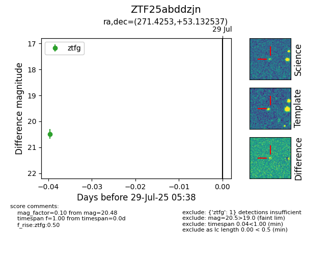

Target ZTF25abddzjn at 2025-07-29 05:38, see:
FINK: fink-portal.org/ZTF25abddzjn
Lasair: lasair-ztf.lsst.ac.uk/objects/ZTF25abddzjn
ALeRCE: alerce.online/object/ZTF25abddzjn
alt names
ZTF25abddzjn (ztf,fink)
coordinates:
equatorial (ra, dec) = (271.4253,+53.13254)
galactic (l, b) = (81.1350,+28.07667)
photometry
last ztfg=20.48
1 ztfg detections
